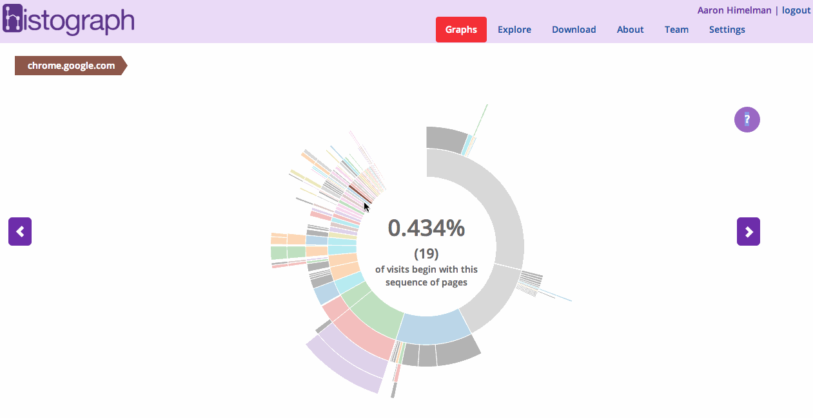
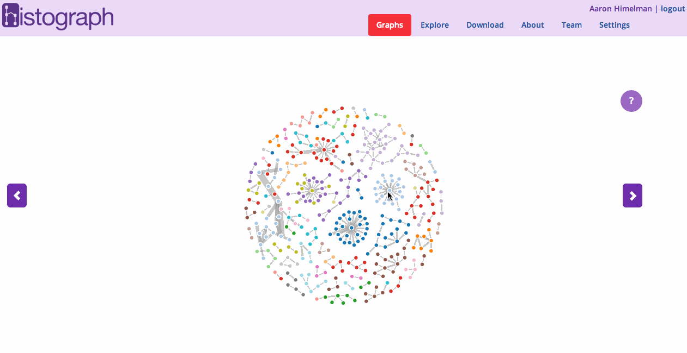
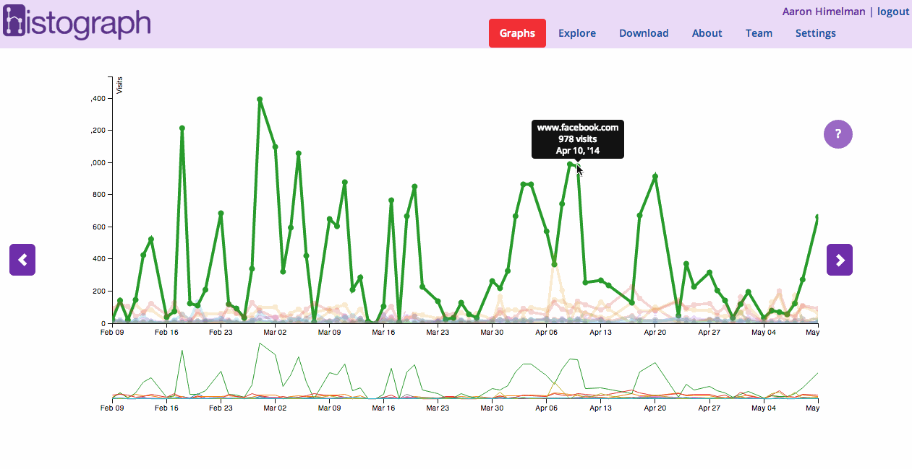
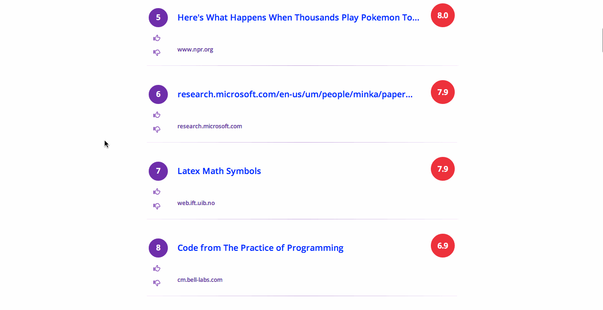
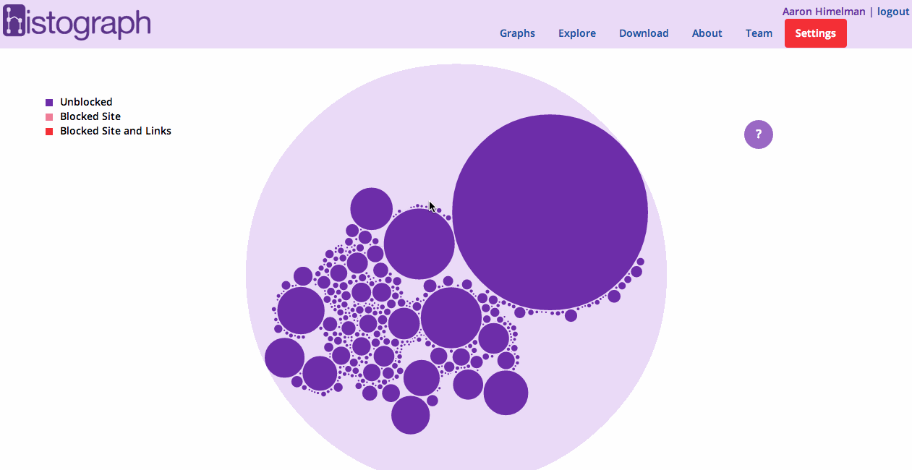
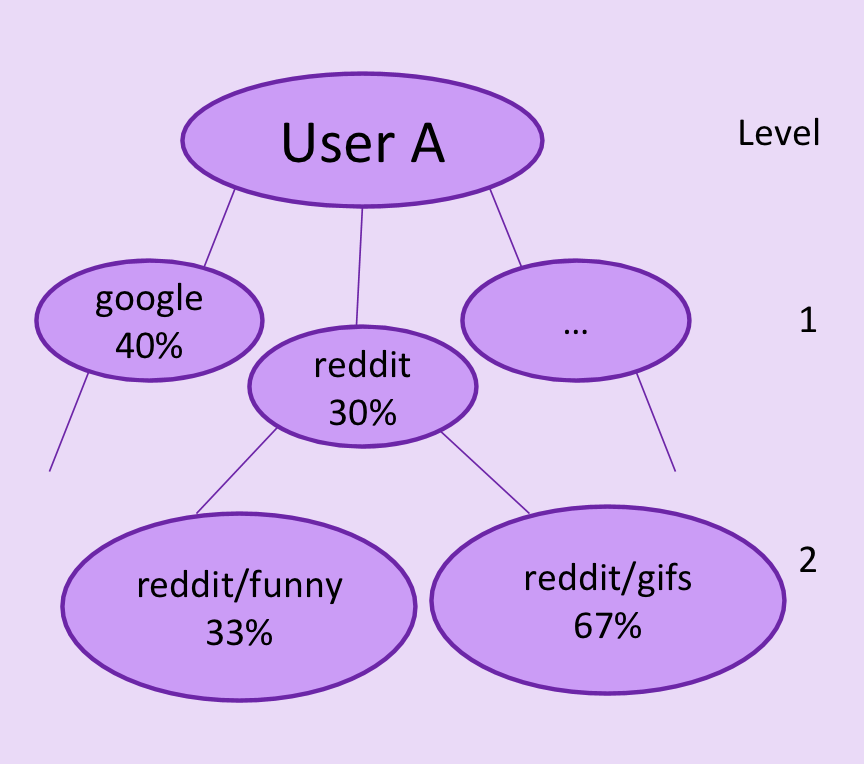
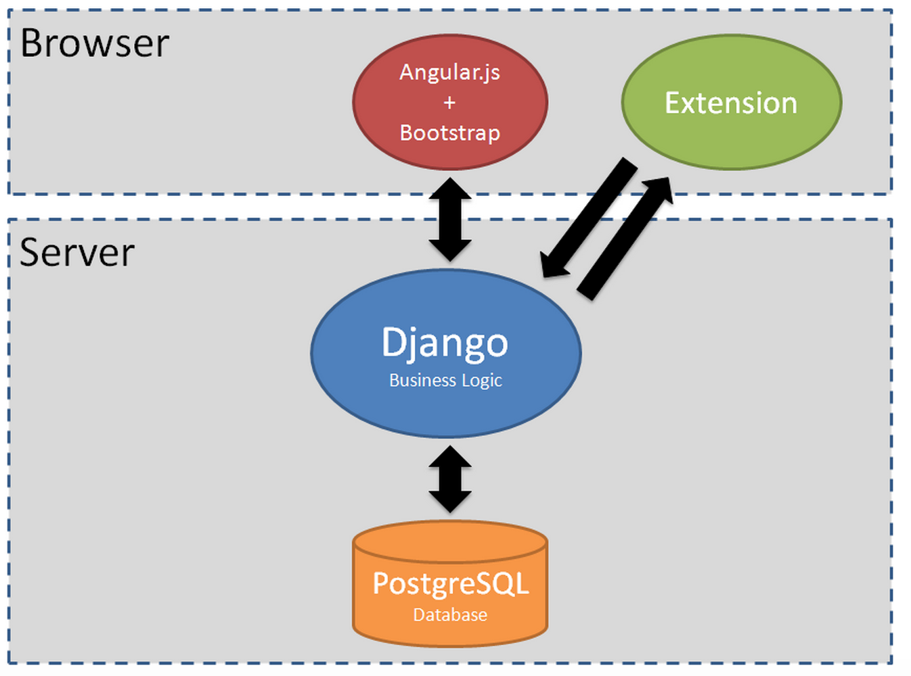

Introduction
Histograph is a web application that provides graphical analytics of a user’s browsing history and recommends new websites for a user to browse based on their history and the history of their friends. The fundamental issue at hand is that users do not have a convenient means to understand their browsing history and do not have a way to adjust their browsing habits based on the browsing habits of their peers and others alike.
People
Ankush Gola, Aaron Himelman, Riley Thomasson, Sam Payne, Akshaya UttamadossGIFs
Sunburst Graph
This plot allows the user to dive deeper into his/her browsing history based on URL structure.
Directed Graph
This graph allows the user to follow link transitions. A thicker link means more transitions.
Line Plot
This plot shows browsing history for different domains across time.
Recommendations
This plot allows the user to dive deeper into his/her browsing history based on URL structure.
Bubble Graph
This graph allows the user to recursively dive deeper into his/her browsing history and filter URLS he/she doesn't want to send to Histograph.
Brief Technical Overview
A chrome extension sends browsing history to a Django backend. Here, the data is cleaned, and parsed into URL tree data structures for each user. The trees are rendered into formats accepted by the client-side D3.js graphing library. Collaborative filtering algorithms are run on a user's and friends' trees to generate recommendations; each tree is traversed, and scores are calculated by taking into account similarity of distributions. Caching and pagination were used to improve performance. For more detail see our presentation or codebase. Also, feel free to email me!
 